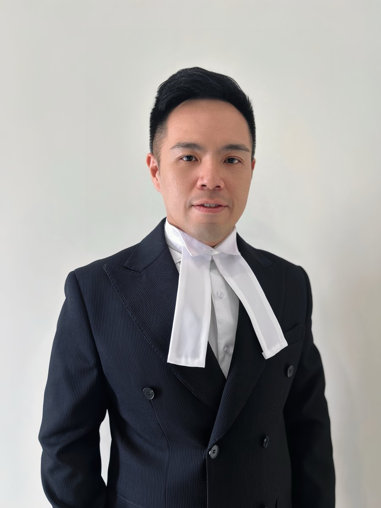

Clients work directly with the firm's counsel rather than being routed through layers of case handlers. Below is the firm's current profile — to be expanded as the team grows.

Teo Jeng Yu is the founder and Managing Partner of TEO JENG YU & PARTNERS, and leads the firm's practice in commercial litigation, construction and infrastructure disputes, corporate and shareholder matters, restructuring and insolvency, debt recovery, property and employment law.
He has acted in a series of reported matters before the Malaysian courts, including disputes involving corporate liquidation and insolvency, construction, and property and consumer-related litigation, acting for both plaintiffs and defendants across corporations and individual clients.
His practice is grounded in the firm’s broader philosophy: combining strategic thinking, commercial understanding and a focus on long-term client relationships, so that legal advice reflects not just the law but the business realities behind it.
[2026] 3 MLRH 601 KELUARGA UTAMA SDN BHD v PUBLIC BANK BERHAD
[2026] MLRHU 3056 JSNT2 SDN BHD v CHINA CONSTRUCTION YANGTZE RIVER (M) SDN BHD
[2025] SMCU 13 MENARA SAFUAN JOINT MANAGEMENT BODY v CBAL SDN BHD
[2025] CJLU 2501 LI FEN v YIP KAI JUNG & 7 ORS
[2024] 10 CLJ 216 PENINSULA EDUCATION (SETIA ALAM) SDN BHD v BIAXIS (M) SDN BHD (IN LIQUIDATION)
[2024] CLJU 418 PEMBINAAN FEDERAL SDN BHD v BIAXIS (M) SDN BHD (IN LIQUIDATION)
[2024] 6 CLJ 548 INDUSTRIAL PROPERTY MANAGEMENT SDN BHD v FOREBASE PROPERTY SDN BHD & ORS
[2023] 4 CLJ 778 INDUSTRIAL PROPERTY MANAGEMENT SDN BHD v BIAXIS (M) SDN BHD
[2023] CLJU 2700 BIAXIS (M) SDN BHD (IN LIQUIDATION) v PENINSULA EDUCATION (SETIA ALAM) SDN BHD
[2023] 1 LNS 478 ICE FAR EAST SDN BHD v BIAXIS (M) SDN BHD
[2023] 5 CLJ 628 PENGANGKUTAN UFO SDN BHD v HAP SENG CREDIT SDN BHD & ORS
[2023] MLRHU 2358 INDUSTRIAL PROPERTY MANAGEMENT SDN BHD v FOREBASE PROPERTY SDN BHD & ORS
[2022] 1 LNS 1284 CHINA CONSTRUCTION YANGTZE RIVER (MALAYSIA) SDN BHD v S-FORM SYSTEM FORMWORK (M) SDN BHD
[2021] 1 LNS 1991 NG SIM KIM v FUNDAQ F&B SDN BHD & 2 ORS
[2020] 1 LNS 430 ECO GREEN CITY SDN BHD v TRIBUNAL TUNTUTAN PEMBELI RUMAH & 3 ORS
[2020] 4 ILR 234 MOHD ZAMANI IBRAHIM v ARH JURUKUR BAHAN SDN BHD
Explore the areas of law our team advises on, day to day, for corporations, financial institutions and developers.
View Practice Areas